Datasets
To create these maps we will be using the following datasets:
Boroughs - New York City boroughs. Download from NYC Planning - Open Data. Choose "Borough Boundaries (Clipped to Shoreline)", under "Borough Boundaries & Community Districts".
MapPLUTO - New York City MapPLUTO file (latest version), containing all the lots in New York and their attributes. The original PLUTO files can be downloaded from NYC Planning - Open Data. For more information about the PLUTO files and what each of the fields means take a look at the useful PLUTO data dictionary (in the same link).
Hydrography - New York City hydrography. Download from NYC Open Data. Once you get to the NYC OpenData page, click
Exportand choose theShapefileformat.Planimetric - New York City planimetric data. Download from NYC Open Data. This is a pretty large dataset. It includes geographical data for boardwalks, curbs, medians, parks, open space, railroad, and roadbed, amongst others. This dataset comes in the form of a
geodatabase. Download the zip file.Building footprints - New York City's building footprints. Download from NYC Open Data. Once you get to the NYC OpenData page, click
Exportand choose theShapefileformat.NTAs - New York City's neighborhood tabulation areas. Download from NYC Planning - Open Data. These are not the traditional NYC neighborhoods. These areas "were created to project populations at a small area level, from 2000 to 2030 for PlaNYC, the long-term sustainability plan for New York City... This criterion resulted in combinations of neighborhoods that probably would not occur if one were solely designating boundaries of historical neighborhoods. Moreover, the neighborhood names associated with the neighborhood tabulation areas are not intended to be definitive." Once you get to the NYC Planning Open Data page, download the
shapefileformat.
A packaged file of the above data can be found at brwn.co/L1D. Note that this package may contain partial datasets meant for this tutorial. To get the full datasets please refer to the links above.
Adding Layers
The first step in creating a basic map is to open QGIS and add the layers you downloaded.
To add shapefiles click on the
Add Vector Layerbutton. Other types of data will be added using the other buttons, but in this tutorial we will only be using vector data (shapefiles). Other types of data include rasters, csv (comma separated values), and postGIS layers.
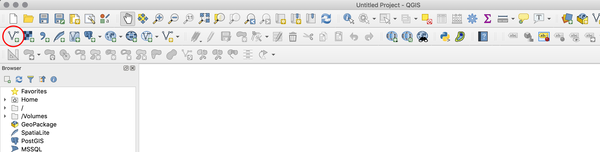
Start by adding the Boroughs layer. The reason we start with this one is because we know it has the right projection for New York City (NAD_1983_StatePlane_New_York_Long_Island_FIPS_3104_Feet). Since map projects will automatically take the projection of the first layer we add, by loading this layer first we make sure we are working with the right one.
Under
Soruce, click on the three dots and make sure you select the file with the extension.shp. Remember that a shapefile is actually made up of 5 or 6 individual files with different extensions. Normally, these individual files are the following:.shp - The main file that stores the feature geometry (required).
.shx - The index file that stores the index of the feature geometry (required).
.dbf - The dBASE table that stores the attribute information of features (required).
.sbn and .sbx - The files that store the spatial index of features (these might get corrupted, see note at the end of this tutorial).
.prj - The file that stores the coordinate system information.
For more information on these extensions and others see this explanation by ESRI.
To double check your map took the right projection, take a look at the bottom right corner of your computer and verify that it says
EPSG:2263, which is the "European Petroleum Survey Group" code for the NAD_1983_StatePlane_New_York_Long_Island_FIPS_3104_Feet projection.Go ahead and add the rest of the files you downloaded, except for the planimetric data.
For this one, you need to choose
DirectoryunderSource Type, and underTypechooseOpenFileGDB. Choose the folder, not individual files inside it. And once you hitAdd, QGIS will prompt you to select one or multiple layers to add. Here, select and add the one calledRoadbed.Once you've added all the layers you downloaded, you need to organize them in the layer panel. Remember that the layers will be drawn in the same order they appear in the panel: the top layer will be drawn last, on top of the other ones.
The final order of the layers should be something like this (from top to bottom):
Building Footprints
Roadbed
MapPLUTO
Hydrography
Neighborhood Tabulation Areas
Boroughs
These layers will probably come with different names but you can rename them by right-clicking on them in the Layers Panel and selecting
Rename.If when you zoom in to one of the layers some of its features disappear see the note at the end of the tutorial.
Basic Symbology
Symbology is one of the most important concepts in mapping.
At its most basic level, symbology stands for changing the color, line weight, size or outline of a layer.
However, and more importantly, it also means changing the appearance of a layer based on one or multiple of its attributes.
In this tutorial we will do both, simple color changes and more advanced symbologies based on attributes.
As you may have seen, QGIS assigns random colors to each of the layers you add. To change the appearance of each layer do the following:
First, since we are interested in creating a land use map of a part of New York, you should zoom in into our target area. To do this, right-click on the Lots layer and click
Zoom to Layer. This is also very useful when for some reason you've panned away from your layers and you can't find them on your map. Just right-click on any of them and selectZoom to Layerto go back to them.Second, let's deactivate the layers we won't be using for now, so that we don't see them in the map. These are the building footprints layer and the neighbohood tabulation areas one.
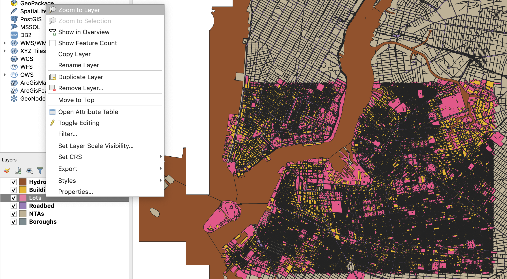
There are multiple ways of changing the appearance of a layer. The easiest (and simplest) is to double-click on the icon (point, line or polygon) next to the layer name, or on the actual layer name on the layer panel. This brings up the
Layer Propertiespanel. There, selecte theSymbologytab. In there you can change the fill (color), stroke weight and fill (outline) and the size of the icon (if using points or icons).
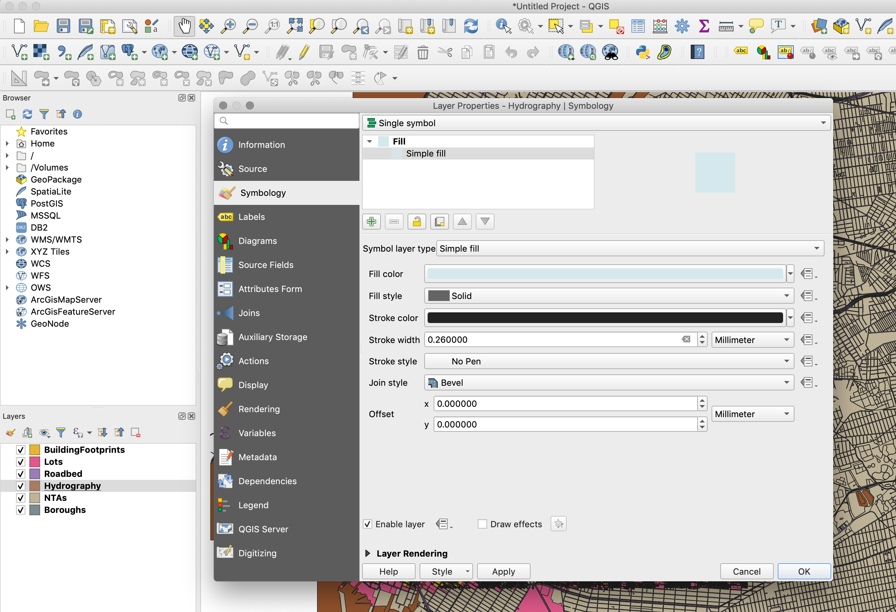
In this panel change the style for the following layers in the following ways:
Roadbed:
Fill color: #ffffff (HTML notation)
Fill style: Solid
Outline style: No pen
Hydrography:
Fill color: #d4e9ed (HTML notation)
Fill style: Solid
Outline style: No Pen
Boroughs:
Fill color: #ececec (HTML notation)
Fill style: Solid
Outline style: No Pen
To change the appearance of the background, select the
Projectmenu, and in there selectProject Properties. Then, in theGeneraltab you can change theBackground colorto #d4e9ed (HTML notation) to match the water layer.
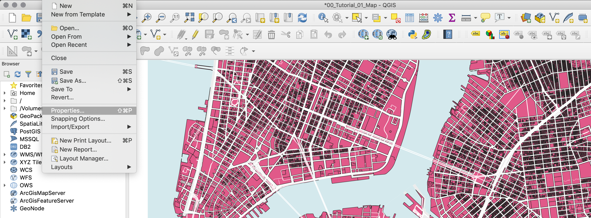
Classification by Categories
Finally, we will symbolize the PLUTO (Lots) layer. However, since we want to differentiate between the different land use types, instead of simply symbolizing all the features in the layer with the same color, we will classify it based on different categories in its attribute table.
First, right-click and open the layer's attribute table. There you will see a field called
LandUsewhich contains a code for each of the 11 land use types (more information on the land use field, and on all the fields in this dataset, can be found in the PLUTO Data Dictionary). This is the code we will use to symbolize the layer. Close the attribute table.Just like for the other layers, right-click on the Lots layer and choose
Properties. Go to theSymbologytab. Here, however, chooseCategorizedinstead ofSingle symbolin the drop-down menu at the top.Next, choose the
LandUsefield in theColumnoption.Click on
Classifyto classify the data and display the different values. Here, QGIS goes through all the values in the attribute table for that particular field and assigns a color to each one of them. The default color assignment is random.Land use maps have a standard set of colors so we have to go into each type and manually change the color. Double click on each symbol and adjust them according to the following list:
01 (One & Two Family Buildings): #fffebc
02 (Multi-Family Walk-Up Buildings): #f3ab3d
03 (Multi-Family Elevator Buildings): #9e7025
04 (Mixed Residential & Commercial Buildings): #ef9c6f
05 (Commercial & Office Buildings): #d64139
06 (Industrial & Manufacturing): #a060c3
07 (Transportation & Utility): #f7cffc
08 (Public Facilities & Institutions): #3b70f6
09 (Open Space & Outdoor Recreation): #81af79
10 (Parking Facilities): #ababab
11 (Vacant Land): #2c2c2c
In addition, add the land use type name in the
Legendcolumn.Finally, to change the outline for all the categories, click on the
Symbol, Change...button and set the stroke color to #999999 and the stroke width to 0.1 milimeter.
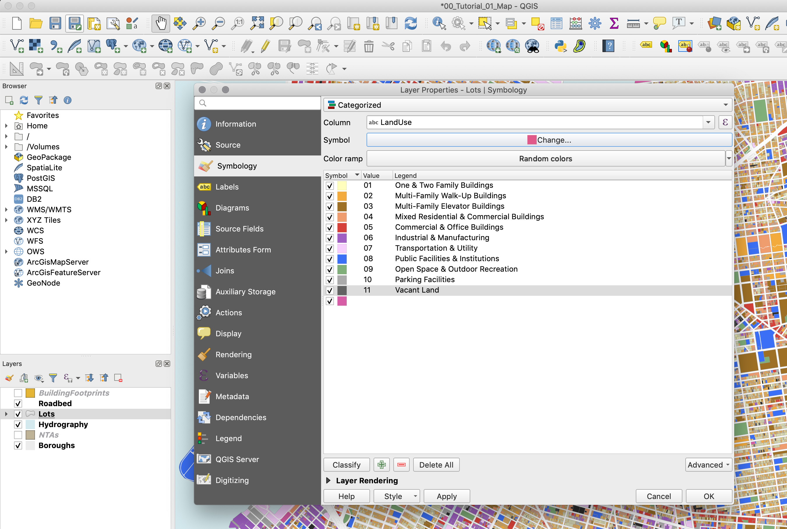
Click
OKto close the properties panel.
Adding Labels
We will use the Neighborhood Tabulation Areas layer to add some labels to our map.
First, activate it by clicking on the checkbox next to its name on the Layers panel. Next, double clikck on it to open its properties.
Under
SymbologychooseNo symbols.Under the
Labelstab chooseSingle labels. And underLabel withchoose the "ntaname" column.
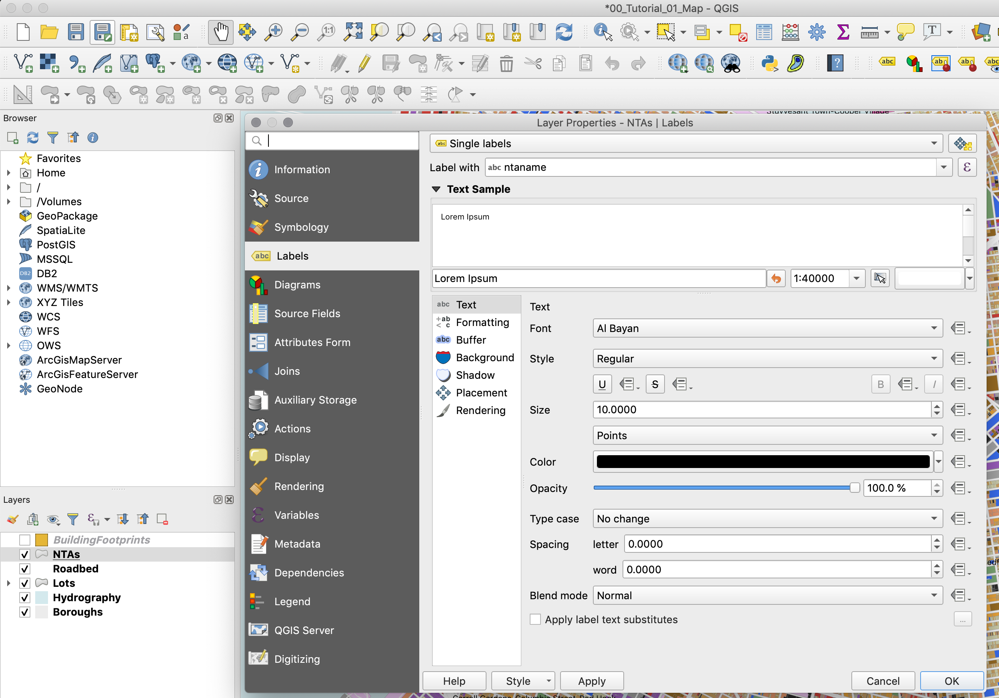
If you click
OKyou will notice that some of the labels say something like "park-cemetery-etc". In order to not display these labels we will create a "rule based" label expression. Go back to the layer's properties and in theLabelstab, chooseRule-based labelinginstead ofSingle labels. Here we will write a short rule to ignore those labels that begin with "park-cemetery".Here, double click on the "+" sign at the bottom of the panel to add a rule. Then, next to the
Filteroption, type the following rule:"ntaname" not like 'park-cemetery%'. Finally, below make sure in theLabel withfield you select "ntaname".
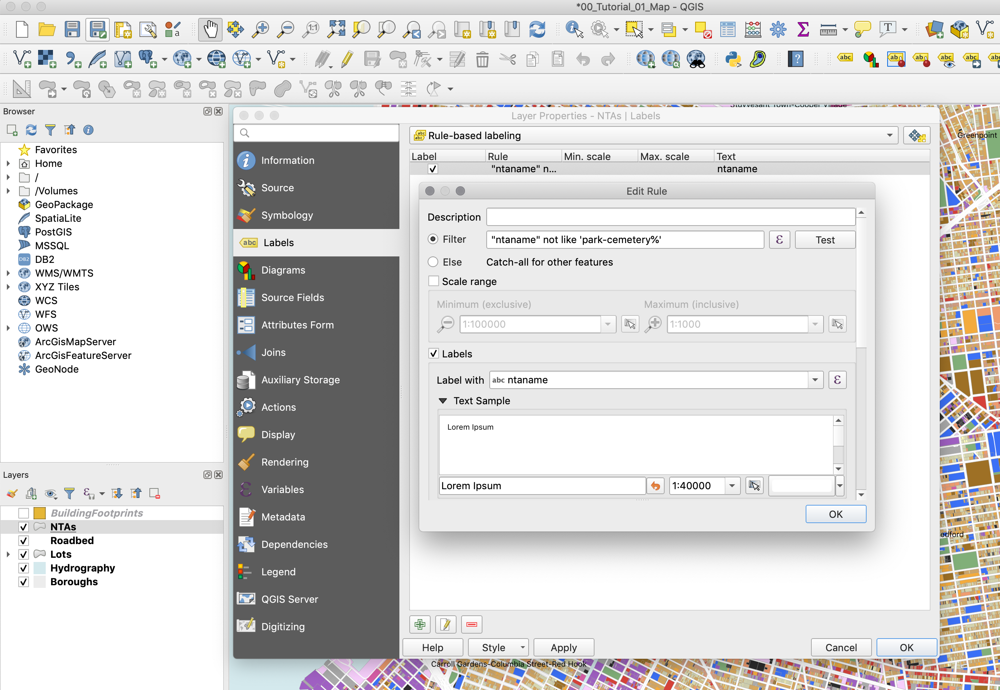
Finally, to make sure the text is more visible, add a white
Bufferaround it.
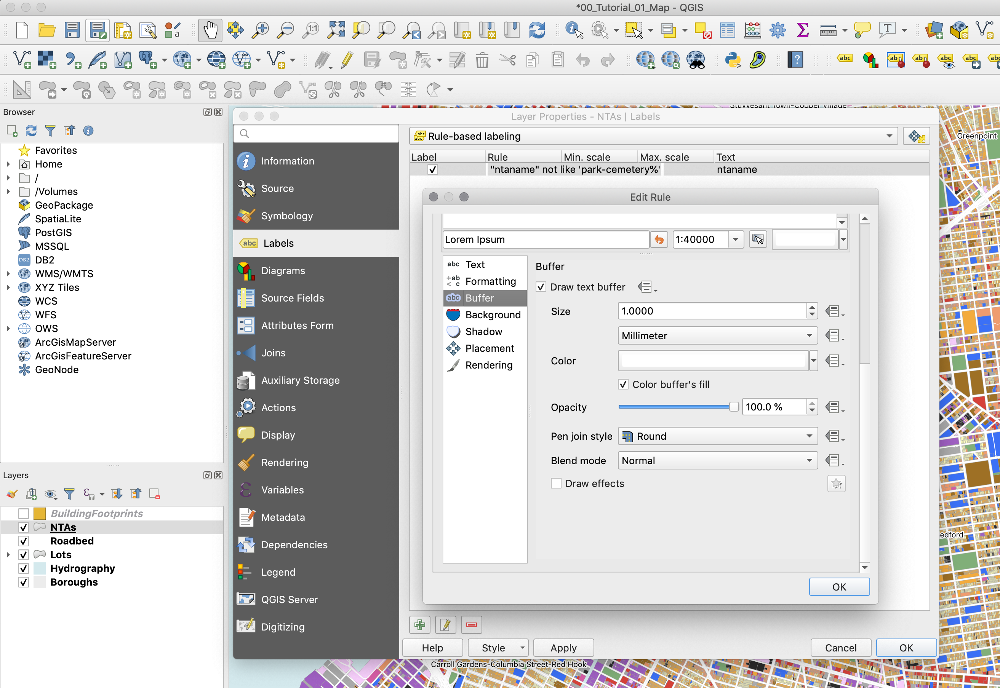
Click
OKto close the properties panel.
Print Composer
The Print Composer is where you will format your map for its final output. Here you will specify the output size, you will add a legend, a scale bar, a north arrow (if needed) and any additional text (titles, sources, explanations and credits). Although the Print Composer exists as its own window it will still be linked to the map Project we have been working on.
First, create a new Print Composer in
Project,New Print Layout. Give it a custom name if you want, although this is not necessary.Once you are in the Print Composer you need to add a new map. Think of it as if you had a blank piece of paper and you were adding a window onto the map you've been working on. That window is a link to your Project and if you change things in the Project those changes will still be reflected in the Print Composer.
To add a new map, click on the button
Add new mapon the left-hand panel and draw a rectangle on the blank page.Once you add the map you can adjust its size and position by dragging it from its corners.
You might notice that if you change the size of the map it doesn't necessarily update. To avoid this, on the right-hand panel, where it says
Main properties, click onUpdate preview.To move the content inside the Print Composer (as opposed to the whole page) use the
Move item contenttool on the left-hand panel.
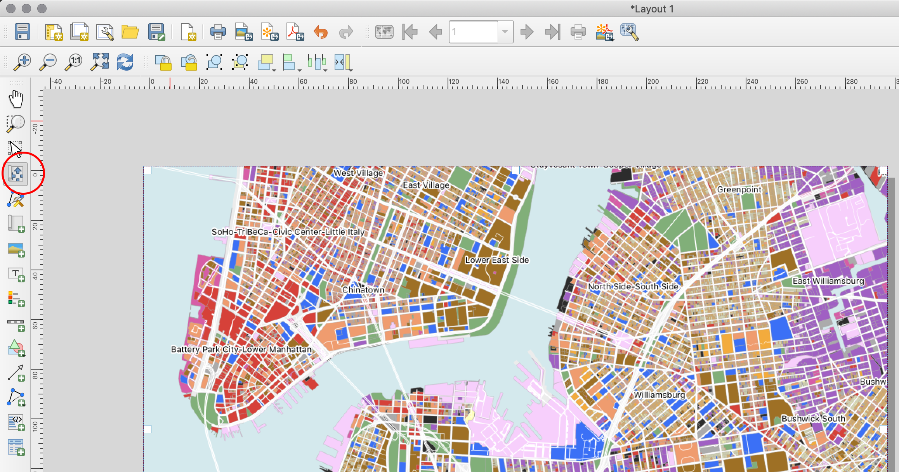
Next, you need to center and zoom in the map on the area you want to focus on. For the purposes of this tutorial, we will center around downtown Manhattan and downtown Brooklyn. To do this, move the content of the map to this area and on the right-hand panel, under
Main properties, adjust yourScaleto 28,000.If any of the colors or line weights seem too big or two small or not correct, you can always go back to the Project and change them there. When you return to your Print Composer you can update your preview and the changes will be reflected.
Add a scale bar by going to
Add ItemAdd scalebarand clicking on the map.The default scale bar is too big. To change this, go to the right-hand panel, in the top part make sure you select the
Scalebar, and adjust its properties in theMain Propertiespanel. You can also adjust its units, its colors and even its font.To add a legend click on
Add ItemAdd legendand then click on the map. You will notice that QGIS automatically generates a line in the legend for every layer in the map. We only need the land use ones, so we need to customize the legend:On the right-hand panel, under Legend items uncheck
Auto updateand then select the layers that you don't want in the legend and remove them with the 'minus' button. Do the same thing inside the Lots layer with the categories you don't want to display.Also, further down, uncheck the
Backgroundoption.Under
Spacingchange theSymbol spaceto 0.00mm.And under
Fontschange theItem fontto 8.Since we did not rotate the map we don't need to add a north arrow. If you rotate your map you must add a north arrow. If you wanted to, you could add a north arrow by clicking on
Add ItemAdd arrow.Finally, to add a title and a 'source' text, click on the
Add new labelbutton on the left-hand panel and click on the map. Customize these labels by changing their color, size and location.The last step is to export the map as a .pdf file. Use the
Export as PDFbutton on the top toolbar and save your map.Your final map should look something like this:
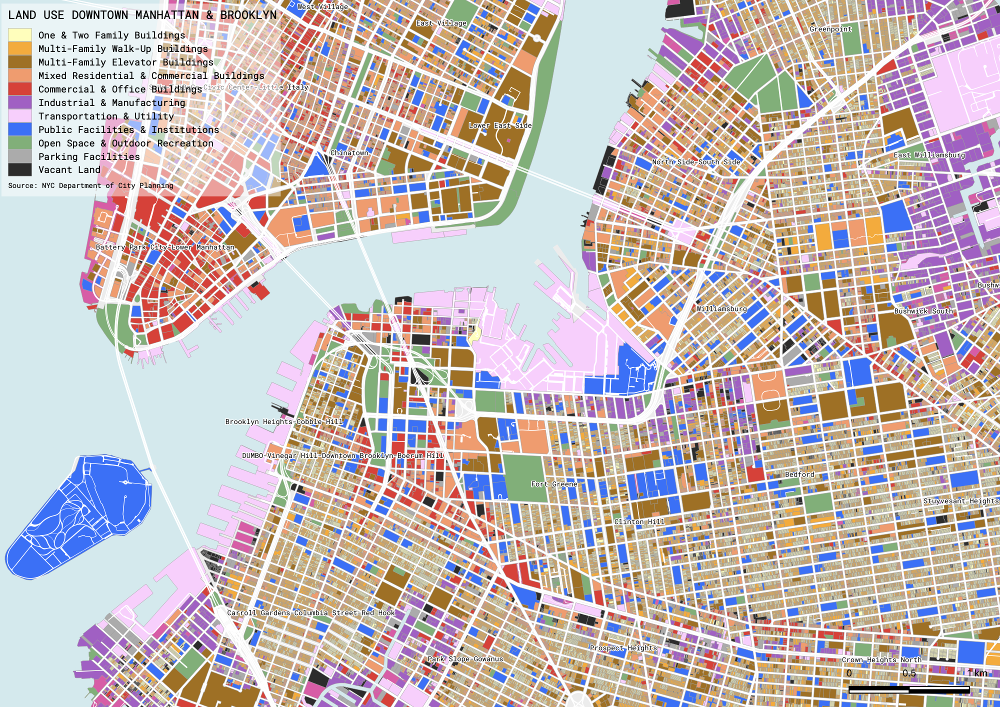

Classification by Values
The second map we will create will show the heights of the buildings in this same area. However, since what we are showing now are continious numerical values, we will use a graduated classification method, as opposed to a categorized one. In addition, this time we will use the building footprint layer instead of the lots one.
Return to your map project and deactivate your Lots layer and activate your BuildingFootprints one.
Now open the attribute table of the BuildingFootprints layer. You will notice a field called
heightroof. This is the one we will symbolize on this map.Open the BuildingFootprints properties and in the
Sybologytab chooseGraduated. In theColumnfield chooseheightroofand hit theClassifybutton in the bottom.You will notice that QGIS creates 5 classes. This default classification method is called
Equal Interval. Before you hitOKclick on theSymbolbutton and set theStroke styletoNo Pen. This way you'll be able to see the results of the classification method much better.
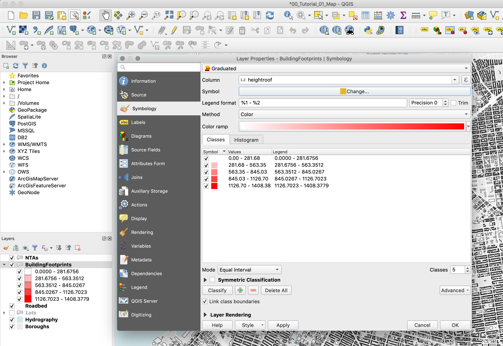
Once you hit
OKyou will notice that with this classification method the tallest buildings appear red but the majority of other buildings are all grouped into the lowest group and are all white.Open the
Symbologypanel again and click on theHistogramtab. Click onLoad Values. Here, you can clearly see how this classification method is creating the buckets for your data. As you can see, most of the values are somewhere below 100, and they are all grouped into a single bucket.
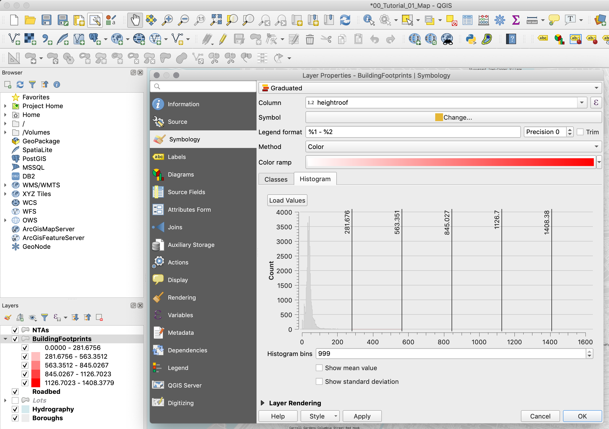
Now go back to the
Classestab and change the classification method toNatural Breaks (Jenks). You might get a warning saying that this method could take a long time. If you have a large dataset you should be careful. However, the dataset that we are using is small enough. Once the classification is done, go to theHistogramtab. You can see how QGIS has now created different buckets and most of the shorter buildings are spread amongst the two first buckets. The Natural Breaks (Jenks) methods attempts to minimize the difference within groups while maximizing the difference between groups. Many datasets will be best classified using this method.
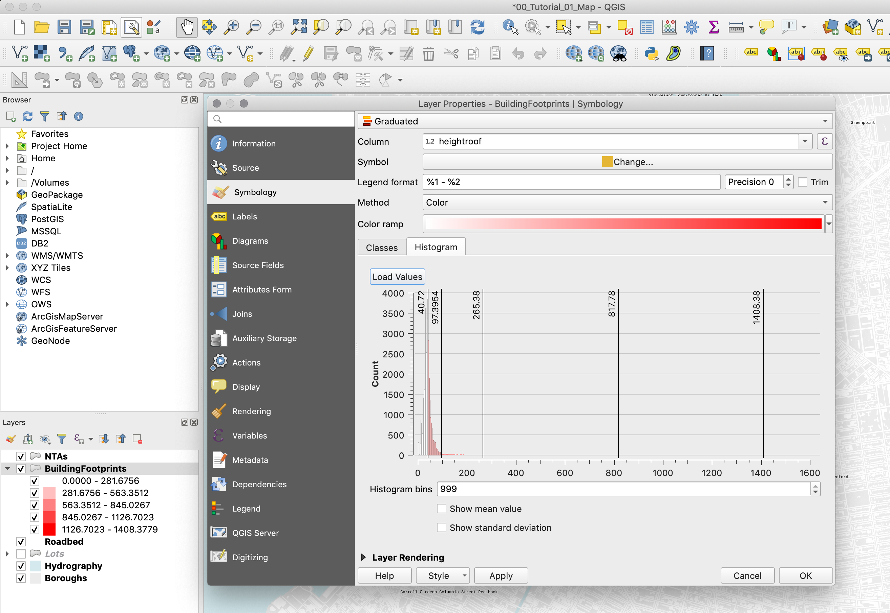
Other methods of classification include Quantiles and Standard Deviations. Go ahead and explore them and see how they change our perception of the data on the map.
Finally, choose the Natural Breaks (Jenks) method and change the
Color ramptoMagma. Once you've done this, right-click on the color scale and chooseInvert color scale.The last step is to adjust a bit the values to make them easier to understand. Double-click on each row and change the value to the following:
0-50
50-100
100-250
250-800
800-1408
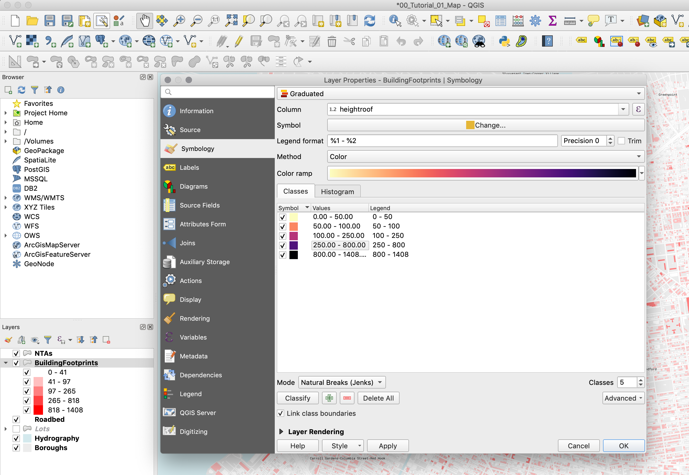
Click
OKto close the properties panel.
Definition Queries
Now, let's say that you want to add a layer showing the parks, just to give our map a bit more context. We could take the Lots layer, symbolize it by land use again, and make all other land use types, except for parks, tranparent. But there's an easier way. We can write query to only show those features where the field land use equals the one we want.
From the preivous map we already know that we can use the
LandUsefield in the Lots layer to select the parks. The corresponding value is '09'. So first, activate the Lots layer again by clicking ont he checkbox next to it in the layers panel and then double-click on the layer to go to itsProperties.In the
Propertieswindow go to theSourcetab and there click on theQuery Builderbutton.Now in the scroll through the fields and double-click on the
LandUseon. You will see it populate theProvide specific filter expressionwindow.Next, either type or click on the "=" sign, and then click on the
Allbutton. This will bring up a list of all the different values in that field.As you can see, all the LandUse values are there. Double-click on "09" to make it appear in the
Provide specific filter expressionwindow. Now the full expression should read"LandUse" = '09'.You could also directly type in the expression but just be careful with the use of single and double quotations. Single quotoation marks denote a
String(a piece of text), and double quotations denote a field.
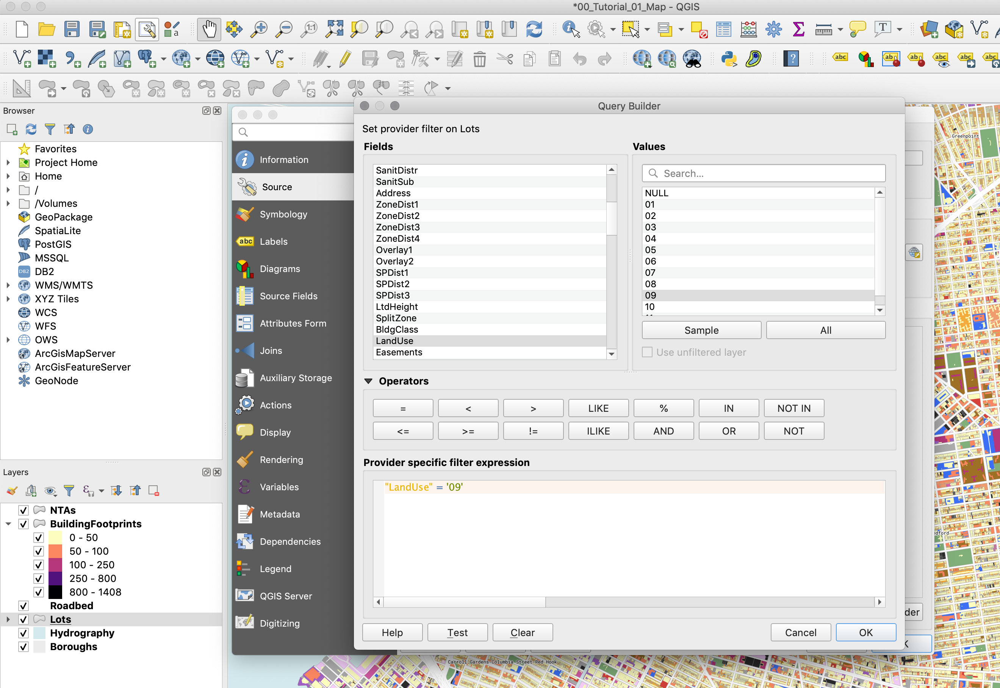
Once you do this you will see that only the parks and open spaces are visible from the Lots layer.
The last thing to do is to give the featues in this layer a color that denotes parks but that doesn't distract too much from what we are trying to show - the heights of the buildings. To do this go to the Lots layer
Propertiesand in theSymbologytab chooseSingle symbol. Give this symbol a fill color of #d5ebd6.Finally, return to the
Print Composerand add all the necessary elements to your map: legend, scalebar, title, and source.Your final map should look something like this:
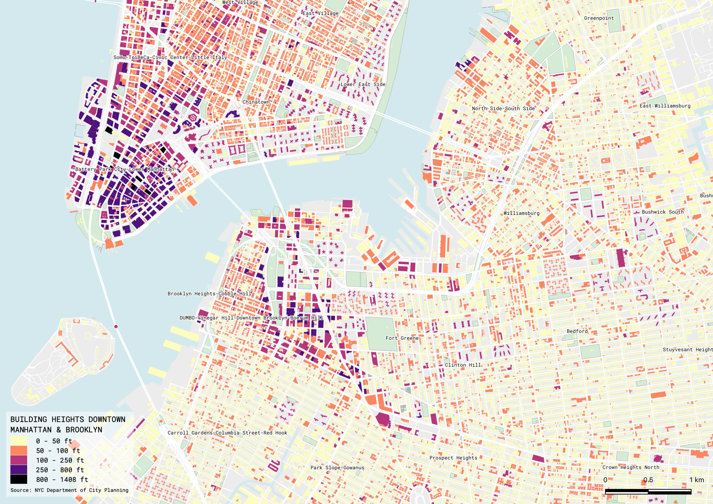
Note
If, after adding some dataset, you zoom in and some of the features disappear,
you probably need to rebuild the dataset's "Spatial Index". To do this right-click on
the layer, select Properties and go to Source. Under
Geometry and Coordinate reference system click on Create Spatial Index.
This should solve your problem. Sometimes, specially with the New York City PLUTO files,
the "Spatial Index" is tied to one of the attribute fields and when you zoom in only
the features with that specific attribute show up. "Spatial Index" are specially useful
when doing operations over large datasets, for example see this post.